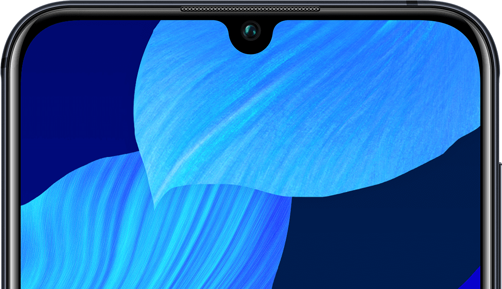
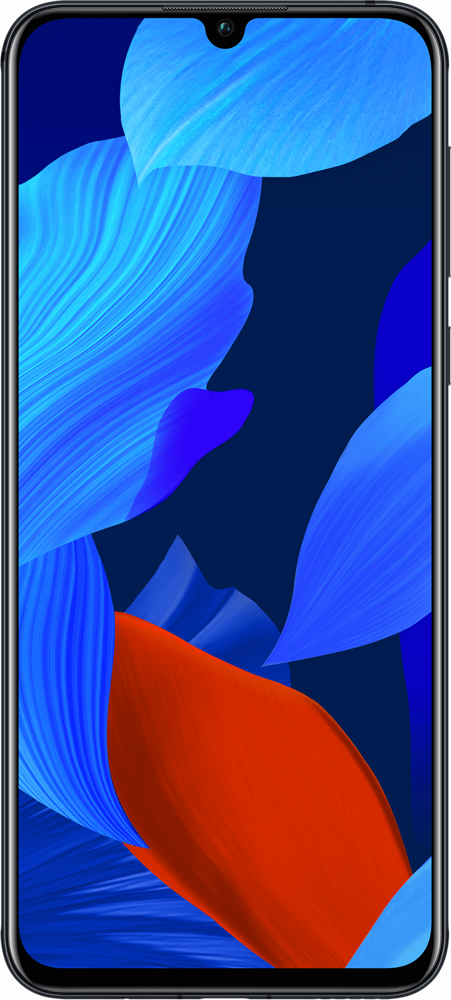
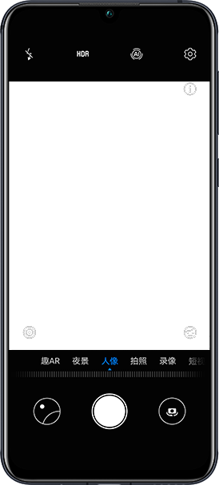
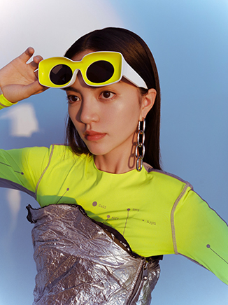
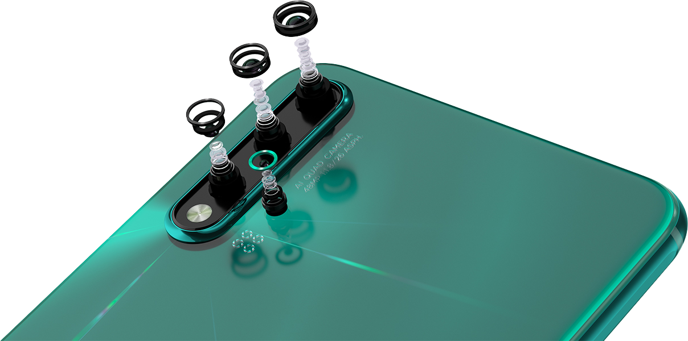

潮流设计+轻盈机身
一眼心动, 一触流连
nova 5 将炫光、渐变与钻石切面巧妙结合，形成光影与空间的视觉艺术。
创新 3D 精雕纹理工艺，打造幻境星芒般的光影效果，令机身色彩随光影自由流动，纯然中不失唯美梦幻。
一眼，怦然心动。7.33 毫米轻薄机身，优美的曲线弧度，打造舒适手感。一触，流连忘返。


珊瑚橙
绮境森林
仲夏紫
亮黑色
01
02
03
04
3200万超高清自拍
让美， 尽善尽美
掌控逆光，让光听从你的美。前置 AI HDR+ ，突破光线限制，逆光自拍时，明暗与细节清晰呈现，
自然柔和映衬 你的面容，让你的每一次自拍，都掠尽风光。




4800 万 AI 四摄
影像间， 勾勒精彩 生活
一个有所准备的摄影师，是生活的见证者和记录者。而当你手持 nova 5，多场景四摄影像系统，就已帮你准备就
绪。无需携带多个镜头，不必繁琐设置参数，拿起手机，即可恣意记录属于你的精彩生活。

4800 万像素摄像头
高清拍摄， 细腻意想不到
定格的珍惜时刻，应经得起放大的考验。nova 5 搭载 4800 万像素摄像头，随手一拍的照片放大后，更多意想不
到的细节纷纷涌现。再有手持超级夜景，AI HDR+ 加持，逆光、弱光、暗光下的精彩瞬息依然细腻呈现。
三摄旗舰影像
独树一帜
一台航拍机，三颗镜头，无尽想象。多焦段所能实现的镜头语言更胜以往，焕新光影表达，也令 Mavic 3 Pro 拥有超群的多场景应对能力。
轻触屏幕，即可在多个焦段间自如切换，面对不同场景都能收获各具风格的构图。
创意顺畅实现，航拍效率一跃而起。
4/3 CMOS
哈苏相机
哈苏相机
24 mm 等效焦距
f/2.8 至 f/11 可变光圈
2000 万像素
f/2.8 至 f/11 可变光圈
2000 万像素
1/1.3 英寸 CMOS
中长焦相机
中长焦相机
70 mm 等效焦距
f/2.8 光圈
4800 万像素
f/2.8 光圈
4800 万像素
1/2 英寸 CMOS
长焦相机
长焦相机
166 mm 等效焦距
7 倍光学变焦、28 倍混合变焦
f/3.4 光圈
f/3.4 1200 万像素
7 倍光学变焦、28 倍混合变焦
f/3.4 光圈
f/3.4 1200 万像素